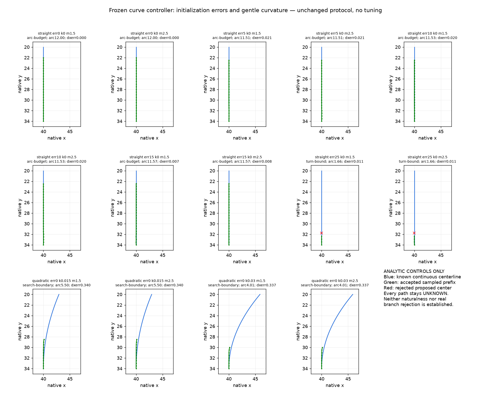

Every36real-photo configuration plus the14analytic controls. Cyan=old anchor; white=prior measured seed; green=accepted sampled prefix; red/orange=rejected predicted/proposed point, never accepted into the trace. Y scales vary. Source panels use Pillow for illustration; numeric probes use verified browser RGBA. Seed lies about2nativepx before the old anchor. No path reaches a demonstrated ending and no new product effect is rendered.
C104 stops on initial-vs-local direction mismatch;22degrees is not a verified physical bend. R1 stops at search boundary; R2 is not seeded. Analytic controls show false controller stop on a straight shaft with25degree initial error and failures on gently curved shafts. Conservative stopping does not establish same-fiber ownership or a general branch detector. Previous full portraits/licenses/effect maps and native100/200/400% crops remain in earlier evidence.
webkit-PI729R2-m1.5-w6.pngwebkit-PI729R2-m1.5-w8.pngwebkit-PI729R2-m2.5-w12.pngwebkit-PI729R2-m2.5-w6.pngwebkit-PI729R2-m2.5-w8.pngANALYTIC CONTROLS ONLY — not portrait proof

Declared width/phase/sampling supplement: all192 analytic variants, unchanged thresholds. Raster sampling alone does not explain all failures.